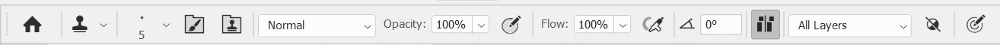
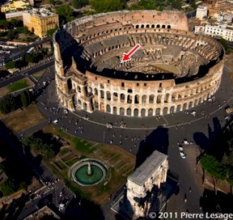
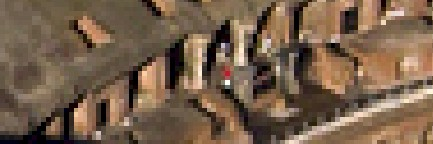
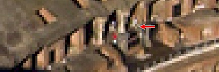
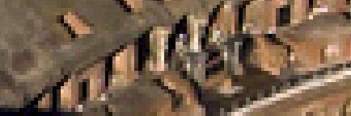
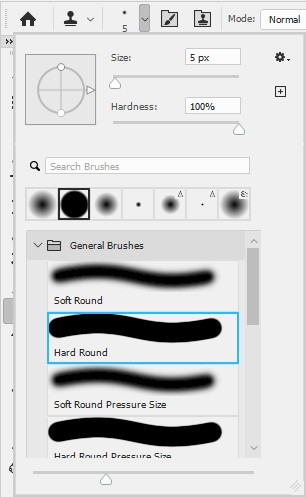
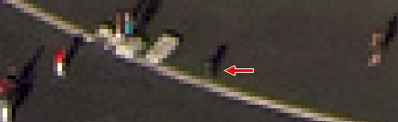
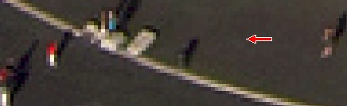
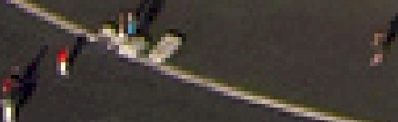

|
Introduction |
Method 1: Brush/Pencil | Method
2: Spot Healing Brush | Method 3: Healing Brush | Method
4:
Patch | Method 5: Content-Aware Move |
| Method 9: Clone Stamp Tool |
Our final individual tool is a general use tool that is equally as good working along an edge as it is in an open area. We will take a look at how to do both.
The Clone Stamp Tool works similar to the Healing Brush Tool in that we begin by defining an area that we wish to clone. We then draw over the unwanted area to replace it with the source area. Yeah, I know, that explanation is not very clear. The truth is that it is kinda hard to explain exactly how this tool works, so let's just use it and you will quickly understand what is going on.





What is going on here is really pretty simple. When you Alt+click a spot while using the Clone Stamp Tool, you are telling Photoshop to use that spot as source material. When you begin to color over what you want to remove, you will notice that Photoshop places a small + sign on the spot that it is using as source material to cover the object you wish to get rid of. While removing the person in red, we are actually making a copy of the building at the location we clicked in direction 7 above.
In this case, the person is easy to remove because using the soft round brush means the edges of where we draw blend in with the existing texture. And since there is a lot going on structurally at that spot, what we drew tends to blend in with the surrounding area and we have a very difficult time figuring out where the person in red was after we zoom out.If any of this sounds familiar, it is because the Clone Stamp Tool works very similar to the Healing Brush Tool. They both sample from one spot and copy it to another spot. The difference between the two is that the Healing Brush Tool will blend the colors from the two spots together to try and create a seamless color transition between the old parts of the image and new parts. With the Clone Stamp Tool, there is no color blending - whatever is being sampled is copy exactly as it is to the new spot. Additionally, the Clone Stamp Tool is very capable when it comes to removing objects next to a line (or a building, or a tree, or anything else we don't want to destroy) while the Healing Brush Tool doesn't work as well. We simply need to set the Clone Stamp Tool to have a solid brush.




The Clone Stamp Tool is only really limited by your ability to find an area within the image that serves as a good source of material to cover up the object you are trying to get rid of. Realistically, we could have used the Clone Stamp Tool to remove every person and object in the image we don't want (and there are some designers and photographers who use the Clone Stamp Tool exclusively), but doing so would have been very time consuming. The other tools and techniques that we have covered generally make our lives easier by being quicker and easier than the Clone Stamp Tool. Still, when one of the other tools does a less than fantastic job, the Clone Stamp Tool is always available to clean things up. The ability to control the brush shape and size means we can get extremely precise with our work.
As a quick reminder, as stated above, the Clone Stamp Tool does not blend colors together. Instead, it is simply replacing one area with another. Know that while this keeps us from having to worry about two colors blending together, it means that there may be times when we have to manually blend colors together. If the areas we are using are vastly different in color, tone, tint, etc, we could get all kinds of strange results.
Let's save our work up to this point.
In the final Step of this lesson, we will take a look at wrapping up our Colosseum image and talk about using what we have covered to edit other images.